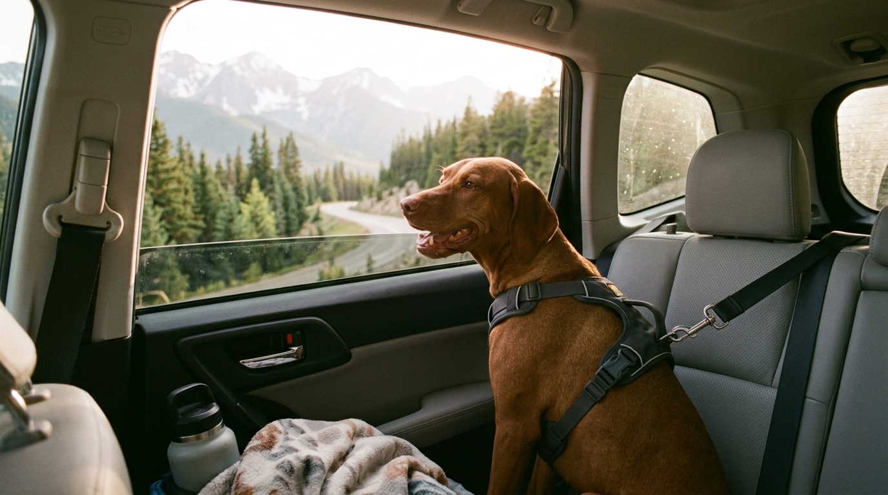

1. Cómo debe viajar tu perro dentro del auto
Un perro suelto en los asientos o con la cabeza fuera de la ventana corre grave peligro ante un frenazo brusco o por el impacto de polvo e insectos en sus córneas. Las opciones más seguras son:
- Arnés acolchado en Y con cinturón de seguridad anclado al Isofix o hebilla:Nunca enganches el cinturón al collar, siempre al arnés.
- Transportadora (Kennel) firme sujeta de forma transversal: Acostumbrada previamente en casa como su cueva de descanso favorita.
2. Cómo evitar el mareo cinético y la ansiedad en carretera
- Ayuno ligero previo: Ofrece su comida al menos 3 horas antes de iniciar un trayecto largo con curvas.
- Ventilación fresca y temperatura agradable: Mantén el aire acondicionado entre 20 °C y 22 °C apuntando también hacia los asientos traseros.
- Paradas cada 2 horas: Detente en zonas seguras con correa puesta para que camine 10 minutos, beba agua fresca y haga pipí.
3. Checklist: Qué empacar en la maleta de tu perro
- Carnet de vacunación vigente y certificado de buena salud emitido por su veterinario.
- Alimento habitual suficiente para todos los días del viaje más 3 días extra por imprevistos.
- Su manta o cama con olor a casa (reduce drásticamente el estrés al dormir en un hotel nuevo).
- Bebedero plegable, bolsas biodegradables, toalla de microfibra y su botiquín básico.
4. Recomendaciones si viajas en avión
Adquiere el bolso de cabina o kennel reglamentario al menos un mes antes del vuelo y déjalo abierto en tu sala con premios y juguetes dentro para que tu perro entre por iniciativa propia todos los días. Consulta siempre las políticas de la aerolínea y evita administrar sedantes sin supervisión veterinaria.
5. Qué hacer al llegar al alojamiento Pet-Friendly
Antes de entrar a la habitación, dale un paseo olfativo de 15 minutos por los alrededores para que descargue tensión del viaje. Luego muéstrale dónde están su cama y su plato de agua, y evita dejarlo solo en la habitación desconocida durante el primer día.
📚 Referencias Científicas y Fuentes Clínicas
- Center for Pet Safety — CPS (2023). Harness and Carrier Crash Test Study & Certification Standards. Center for Pet Safety, Reston, VA.
- American Veterinary Medical Association — AVMA. Traveling with Your Pet: Motor Vehicle & Airline Safety Protocols. AVMA Public Resources.
- International Air Transport Association — IATA (2024). Live Animals Regulations (LAR) — Container Requirements 1 for Domestic Dogs. IATA Publications.
Hoteles, parques y cafés para ir con tu perro
Descubre lugares seguros y tranquilos para pasear o descansar con tu perro.
Ver hoteles y guarderías